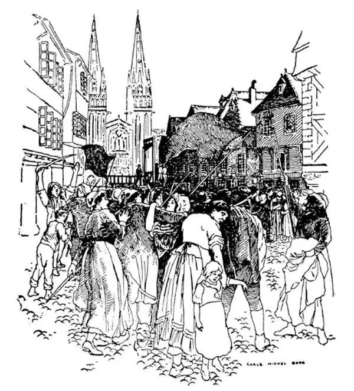
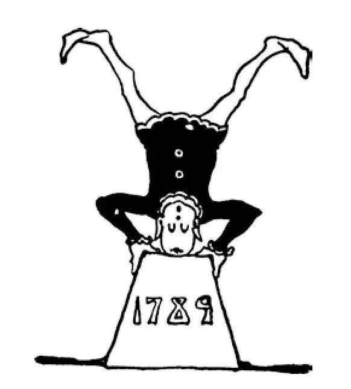

76
Upside Down
天翻地覆

MEASLES and Mumps are very catching.
So are Revolutions.
Just a little later than the Revolution of the thirteen colonies, the people in France had a Revolution, too. They saw how successful the Americans had been in their fight against the king of England, and so they rebelled against their own king and queen in France. This was called the French Revolution.
The reason the French people rebelled against their king was that they had very little, and the king and his royal family and nobles seemed to have everything. Both the Americans and the French rebelled against paying taxes. Although the English taxes were not very high, the Americans thought them unjust. The French taxes, however, not only were unjust but they took almost everything away from the people.
I have already told you how bad things were under Louis XIV, and they got worse until the people could stand it no longer.
At this time the king of France was Louis XVI, and his queen was named Marie Antoinette. The people were so poor that they had hardly anything to eat except a very coarse and bad-tasting kind of bread called black bread. They were compelled to pay the king and the nobles money so the king and nobles could live in fine style and have parties; and they had to do all sorts of work for nothing or next to nothing. If anyone complained, he was put in a great prison in Paris called the Bastille and left there to die. In spite of the fact that all the people were so terribly poor, the king and the queen and their friends lived in luxury and extravagance with everything in the world they wanted, all paid for by the poor people.
Neither the king nor his wife was really wicked. They were simply young and thoughtless. They meant well, but like a great many well-meaning people they lacked common sense and did not know how others lived. They didn't seem to understand that people could be poor, for they had so much themselves. Marie Antoinette was told that her subjects had no bread to eat. “Let them eat cake,” she said.
To right the wrongs of the people, a body of many of the best men from all France gathered together and, calling themselves the National Assembly, tried to work out some plan to do away with all the injustice the people had been suffering. They wanted to make everyone free and equal and give everybody a say in the government. Their slogan was, Liberté, égalité, fraternité . In English this means, Liberty, equality, brotherhood .
The poor had become so furiously angry at the way they had been treated by the rich that they would stand things no longer, and a wild and angry mob of them attacked the old prison of the Bastille. They battered down the walls and freed the prisoners and killed the guards of the Bastille simply because they were servants of the king. Then they cut off the heads of the guards and stuck them on poles and, carrying them aloft, paraded through the streets of Paris. There were only seven prisoners in the old jail, so that freeing them didn't matter much, but this attack was to show that the people would no longer allow the king to imprison them.
The Bastille was stormed on July 14, 1789. This was the beginning of what is called the French Revolution, and this day is celebrated in France in almost the same way that our Fourth of July is, for it was the French Declaration of Independence against their kings.
Lafayette, who was now back in France, the same Lafayette who had helped the Americans fight their king, sent the key of the Bastille over to George Washington as a souvenir that his own country had now overthrown its king and declared its independence.
The king and queen were living in the beautiful palace at Versailles, the palace that Louis XIV had built. Many of the king's nobles, when they heard what was taking place in Paris, became frightened and, deserting their king and queen, took to their heels and left the country. They knew pretty well what was going to happen, and they didn't wait to see.
Meanwhile the National Assembly drew up what was called a Declaration of the Rights of Man, which was something like our Declaration of Independence. It said that all men were born free and equal, that the people should make the laws, and that the laws should be the same for all.
Soon after the Declaration of Rights had been made, the angry mob from Paris, ragged and wild-looking, carrying sticks and stones, and crying, “Bread, bread!” marched the thirteen miles to Versailles, where Louis and Marie Antoinette were still living. Up the beautiful grand staircase of the palace they rushed. The few guards remaining round the king were unable to hold them back. They captured the king and queen and took them prisoners to Paris. There they kept Louis and Marie Antoinette prisoners. Once the king and queen tried to escape in disguise but were caught before they could get out of the country, and they were brought back.
Then it was that the National Assembly drew up a constitution —a set of rules by which the country should be justly governed. This the king agreed to and signed.
That still wasn't enough. The people wanted no king at all to rule over them. So about a year later they started a real republic like our own, and the king was sentenced to death. A Frenchman had invented a kind of machine with a big knife for chopping off heads. This was called the guillotine , and it was used instead of an ax, for it was quicker and surer. The king was taken to the guillotine, and his head was cut off.
But the people did not settle down quiet and contented when they had got rid of their king. They were afraid that those who were in favor of kings might start another kingdom. The people chose red, white, and blue as their colors and the Marseillaise as their national song; and everywhere they marched they carried the tricolor, as they called the three-colored flag, and as they marched they sang the Marseillaise .

French revolution crowd and guillotine （法国大革命的民众和断头台）
Then began what is called the Reign of Terror, and that is a tale of blood. A man named Robespierre and two of his friends were leaders in the Reign of Terror. Anyone whom the people suspected of being in favor of kings they caught and beheaded. The queen was one of the first to have her head cut off. If anyone even whispered that there was a man, or a woman, or even a child who was in favor of kings, that man, woman, or child would be rushed to the guillotine. If anyone hated another and wished to get rid of him, all he had to do was to point him out as in favor of kings, and off he would be taken to the guillotine. No one was sure of his life for a day. He never knew what moment some personal enemy might accuse him. Hundreds, then thousands, of suspected people were beheaded, and a special sewer had to be built to carry off the blood. The guillotine, fast as it was, was too slow for the terrorists. It could cut off but one head at a time, and so prisoners were lined up and shot down with cannon.
People seemed to have gone wild, crazy, mad! They insulted Christ and the Christian religion. They put a pretty woman called the Goddess of Reason on the altar of the beautiful Church of Notre Dame and worshiped her instead of the Lord. They pulled down statues and pictures of Christ and the Virgin Mary. In their places they put statues and pictures of their own leaders. The guillotine was put up in place of the cross. They did away with Sundays. They made a week ten days long, and every tenth day they made a holiday instead of Sunday. They stopped counting time from Christ's birth, because they didn't want anything that had to do with Christ, and they began to call the year when the republic was started in 1792 the Year 1 .
But Robespierre wished to rule alone, and he plotted against his two friends. One of these he had beheaded, and the other was killed in his bathtub by a girl named Charlotte Corday, who was in a rage at what he had done. So Robespierre was left alone. At last the people, in fear of this man who was such a monstrous and inhuman tyrant, rose up against him. When he found that he too, was to be put to death, he tried to commit suicide, but before he could do so, he was caught and taken to the guillotine, where he went to the same death to which he had sent countless others, and the Reign of Terror was ended.
【中文阅读】
麻疹和腮腺炎有很强的传染性。
革命也一样。
在美国十三个殖民地革命后不久，法国人民也发动了一场革命。他们看到美国人在与英国国王的斗争中取得了巨大的胜利，于是他们在法国起来反抗自己的国王和王后。这次革命被称为“法国大革命”。
法国人民奋起反抗国王是因为他们拥有的太少，而国王、王室和贵族似乎拥有一切。美国人和法国人都反对缴税。尽管英国的税额不是太高，但是美国人觉得向他们征税就是不公平。然而法国的税收不仅不公平，还要把人们的一切几乎都要搜刮光。
我已经介绍过在路易十四的统治下情况有多么糟糕，后来变得越来越糟，直到人们再也无法忍受。
此时法国国王是路易十六，他的王后名叫玛丽•安托瓦内特。人民非常贫困，除 了一种非常粗糙、难吃的称为黑面包的面包，几乎没有什么吃的。他们被迫付钱给国王和贵族们，让国王和贵族们生活奢靡，聚会狂欢；他们不得不做各种苦工，却什么报酬也没有，或者报酬少得可怜，和没有差不多。如果有人抱怨，就会被关进巴黎的一座大监狱，叫做“巴士底狱”，然后待在那里等死。尽管人民赤贫如洗，但是国王、王后和他们的朋友们却过着奢侈无度的生活，应有尽有，而这一切都是由穷人支付。
国王和他的妻子都不是真正的邪恶之徒。他们只不过年轻、糊涂。他们心存善意，但是和许多好心好意的人一样，他们缺少常识，不知道其他人是怎样生活的。他们似乎不懂人也会穷的，因为他们自己是这么富有。有人告诉玛丽•安托瓦内特她的臣民没有面包吃。“让他们吃蛋糕吧，”她说。
为了纠正社会的种种不公正，一群来自法国各地最优秀的人聚集到一起，自称 “国民议会”，要制定一个方案结束人们长期以来遭受的所有不公。他们希望让每一个人都得到自由、平等，让每一个人对国家的治理都有发表意见的权利。他们的口号是“Liberte, egalite, fraternite”，意思就是“自由、平等、博爱”。
穷人对富人的虐待和压迫满腔怒火，到了再也无法忍受的地步，一群疯狂愤怒的下层民众袭击了巴士底狱这座古老的监狱。他们砸烂了狱墙，放出犯人，还杀死了看巴士底狱的卫兵，就因为他们是国王的仆人。然后他们砍下卫兵的脑袋，把头颅插在杆子上，高高地举着，在巴黎的街头游行。在这座古老的监狱只有七名犯人，所以放了他们没有什么大的影响，但是这次进攻意在表明人民不再允许国王监禁他们。
1789年7月14日，巴士底狱被攻占。这就是被称为法国革命的开始，在法国，人们庆祝这一天和美国庆祝7月4日一样隆重，因为这次事件相当于法国人民反对他们国王的“独立宣言”。
那时拉斐德回到了法国，就是曾帮助美国人反抗英国国王的那个拉斐德，派人把巴士底狱的钥匙送到美国，交给乔治•华盛顿，作为纪念品表明自己国家现在已经推翻了国王，宣布独立了。
国王和王后此时还住在凡尔赛美丽的宫殿里，这座宫殿还是当初路易十四建造的。当国王的许多贵族听说了巴黎发生的暴动，惊恐万分，他们抛下国王和王后，逃之夭夭，离开了这个国家。他们很清楚马上会发生什么，就不等待观望了。
与此同时，国民议会起草了一份叫做《人权宣言》的文件，类似美国的《独立宣言》。宣言说，人人生而自由平等，法律应由人民制定，在法律面前人人平等。
《人权宣言》通过后不久，从巴黎来的愤怒的下层民众，衣衫褴褛，神情激昂，手持棍棒和石块，喊着“面包！面包！”行走十三英里，来到凡尔赛宫，路易和玛丽•安托瓦内特依然住在那里。他们冲上华丽堂皇的楼梯。留在国王身边的几个卫士阻挡不了他们。他们抓住了国王和王后，把他们押往巴黎，并把他们囚禁在那里。一次国王和王后企图化了装逃跑，但是还没有逃出国就被抓了回来。
就在这时国民议会起草了一部宪法——公正管理国家所依据的一套的规则。国王同意并签署了宪法。
这还不够。人们希望压根就没有国王来统治他们。所以大约一年后，他们建立了和美国一样的真正的共和国，国王被判处死刑。一个法国人发明了一种器械，上 架一把刀专门用来斩首。这个器械被称作“断头台”，它取代了斧子，因为它砍起头来更快、更准。国王被送上断头台，头被砍掉了。
但是除掉国王之后人们并没有安定下来，感到满足。他们担心那些支持国王的人可能要复辟。人们选红、白、蓝三种颜色作为国旗，选《马赛曲》作为国歌；无论他们行进到哪里，他们都扛着三色旗，一边走，一边还唱着《马赛曲》。
接着所谓的“恐怖统治”时期开始了，那是一段血淋淋的历史。一个名叫罗伯斯庇尔的人和他的两个朋友是恐怖统治时期的领导人。任何被怀疑支持国王的人，都被捉起来斩首。王后就是第一批被斩首的人之一。如果有人哪怕是私下悄悄说某人是支持国王的，不管这个人是男人、女人还是孩子都会立刻被拖上断头台。要是有人恨另一个人，希望除掉他，他只需指认对方支持国王就可以把他送上断头台。没有人确信自己能活到第二天。他绝不知道什么时候某个与自己有私仇的人就会指控到自己头上。成百上千、成千上万有嫌疑的人被斩首，以致不得不专门建一条下水道排走血污。断头台，尽管斩首速度很快，但是这些对恐怖分子来说还是太慢了。它一次只能砍一个头，于是犯人们被排成一行，直接用火炮轰。
人们似乎变得越来越疯狂！他们侮辱基督和基督教。他们把一个叫做“理性女神”的漂亮女人供奉在美丽的巴黎圣母院的祭坛上，向她膜拜，而不再敬拜上帝。他们拆除基督和圣母马利亚的雕像和画像，然后放上自己领袖的雕像和画像。断头台被挂起来取代了十字架。他们废除了星期日。他们把一个星期定为十天，每个第十天他们作为节日，取代了礼拜天。他们不再实行耶稣诞生纪年，因为他们不要任何与基督有关的东西，他们开始把共和国成立的1792年称为“元年”。
但是罗伯斯庇尔希望自己一个人统治，于是他密谋陷害他的两个朋友。其中一个被他斩首，另一个在浴缸里被一个名叫夏洛特•科黛的女孩杀死，这个女孩当时对他的所作所为怒不可遏。这样只剩罗伯斯庇尔一个人。最后人们因为害怕这样一个如此残暴、没有人性的暴君，就起来反抗他。当他发现自己也要被处死时，就想要自杀，但是还没有来得及这样做，就被抓住了，并被押到了断头台上，在那里他曾让无数人掉了脑袋，现在他也同样被砍了头，恐怖统治结束了。

公元1789年